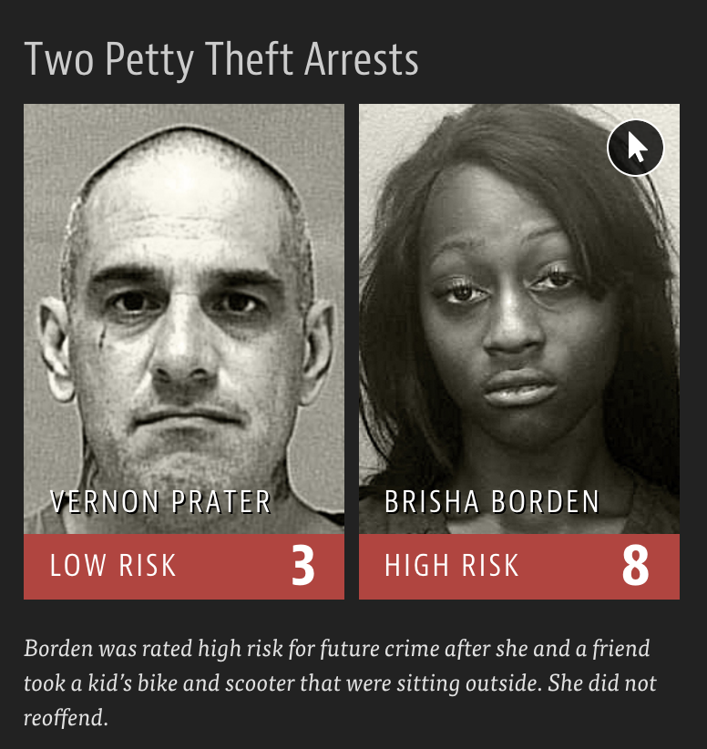

Data Science Ethics
Data Science in a Box
Cornell College
DSC 223 - Fall 2022
October 10th, 2022
Time

LA Times

What is the difference between these two pictures? Which presents a better way to represent these data?

What is wrong with this picture? How would you correct it?

Cost of Gas

What is wrong with this picture? How would you correct it?

Do you recognize this map? What does it show?

Right? Wrong?


Do you want Catalonia to become an independent state?
On December 19, 2014, the front page of Spanish national newspaper El País read “Catalan public opinion swings toward ‘no’ for independence, says survey”.

Do you want Catalonia to become an independent state?


How Charts Lie
Getting Smarter about Visual Information
by Alberto Cairo
OK Cupid data breach
In 2016, researchers published data of 70,000 OkCupid users—including usernames, political leanings, drug usage, and intimate sexual details
Researchers didn’t release the real names and pictures of OKCupid users, but their identities could easily be uncovered from the details provided, e.g. usernames
Some may object to the ethics of gathering and releasing this data. However, all the data found in the dataset are or were already publicly available, so releasing this dataset merely presents it in a more useful form.
Researchers Emil Kirkegaard and Julius Daugbjerg Bjerrekær
In analysis of data that individuals willingly shared publicly on a given platform (e.g. social media), how do you make sure you don’t violate reasonable expectations of privacy?

Google Translate
Criminal Sentencing
“There’s software used across the country to predict future criminals.
And it’s biased against blacks.”

A tale of two convicts


ProPublica analysis
Results:
- 20% of those predicted to commit violent crimes actually did
- Algorithm had higher accuracy (61%) when full range of crimes taken into account (e.g. misdemeanors) ::: {.cell} ::: {.cell-output-display}
 ::: :::
::: ::: - Algorithm was more likely to falsely flag black defendants as future criminals, at almost twice the rate as white defendants
- White defendants were mislabeled as low risk more often than black defendants
 ::: :::
::: :::
Machine Bias
by Julia Angwin, Jeff Larson, Surya Mattu, and Lauren Kirchner

Ethics and Data Science
by Mike Loukides, Hilary Mason, DJ Patil
(Free Kindle download)

Weapons of Math Destruction
How Big Data Increases Inequality and Threatens Democracy
by Cathy O’Neil

Algorithms of Oppression
How Search Engines Reinforce Racism
by Safiya Umoja Noble